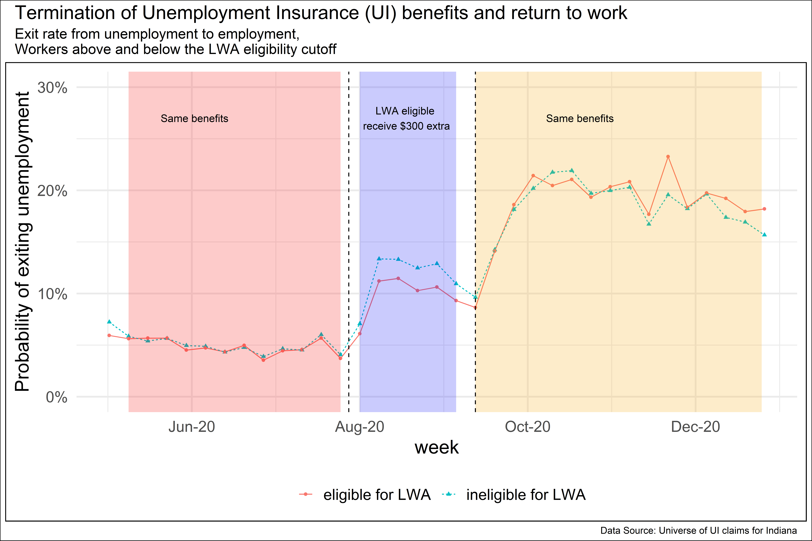

Research
Published papers
Motghare, S. (2023). Contemporaneous and Lasting Effects of Electoral Gender Quotas. World Development
Gender quotas in India increased women representation without large negative effects.
Abstract
This paper examines several ways in which electoral gender quotas affect the political system. It uses data on reserved seat quotas for women in village councils in the Indian state of Jharkhand. Village council head positions subjected to gender quotas continue to elect more women even after the quotas are no longer binding. Gender quotas do not have spillover effects on other lower hierarchy positions in the council. They reduce electoral competitiveness, but only in the first round of elections and only at council member position. They do not affect the caste composition of the winning candidates. These results suggest that women’s representation may be achieved without large negative effects and that temporary electoral gender quotas can be an effective policy tool to increase long-run women’s political representation. The results are pertinent for affirmative action policies addressing other forms of discrimination.Motghare, S. (2021). The long-run elasticity of labor supply: New evidence for new york city taxicab drivers. Labour Economics
New York City taxicab drivers worked fewer hours following a wage increase.
Abstract
I study how New York City taxicab drivers change their work hours in response to a permanent wage change. Exploiting the effective wage increase induced by a regulatory change in fares, I estimate the long-run elasticity of labor supply to be -0.5. I show that the data limitations may have biased the estimates in a previous study that also use data for New York City taxicab drivers. Since the drivers are almost exclusively males, the estimate likely represents male labor supply elasticity. The negative elasticity is consistent with rising wages and declining work hours per worker observed over many decades and is useful evidence for policymakers to improve tax/ transfer systems.Working papers
Motghare, S. and V. V. Kamble. Intertemporal Elasticity of Labor Supply: Evidence from New York City Taxicab Drivers Using a New Instrument.
Workers work more when wages are high
Abstract
We estimate the intertemporal elasticity of labor supply for New York City taxicab drivers using a new instrument: the type of taximeter installed in the vehicle. The two meter systems in use display different default tip percentages, generating plausibly exogenous variation in tip income and hourly pay across shifts. Assignment to the “high-default” meter raises hourly wages by 0.5 percent, entirely through tips, and increases shift hours by 0.9 percent, implying an elasticity of 1.7. These findings align with the standard neoclassical prediction that workers supply more hours when temporary pay rises and shed light on labor-supply behavior in flexible, schedule-setting work environments more broadly.Motghare, S. Unemployment insurance generosity and labor supply - Evidence from the COVID-19 recession
Unemployment insurance during COVID-19 had a modest effect on Indiana’s unemployment and likely prevented labor force exits.
Abstract
I study the effect of Unemployment Insurance (UI) generosity during the COVID-19 recession using administrative data on the universe of Unemployment Insurance claims for the state of Indiana. The difference-in-difference identification strategy exploits the timing of the expiration of the Federal Pandemic Unemployment Compensation (FPUC) and the Lost Wages Assistance (LWA) programs and the eligibility rule for the LWA program, which paid eligible workers an extra $300 per week for up to 6 weeks. A change in weekly benefit amount by $300 is associated with a change in the exit rate out of unemployment by 2.1 percentage points (p.p.) in the opposite direction. This is because of both a decline in the reemployment rate (1.7 p. p.) which represents the disincentive or the moral hazard effect of UI, and a decline in labor force exits (0.4 p. p.) which suggests the ability of UI to keep workers in the labor force or the labor force participation effect. Access to six weeks of increased benefit amounts did not change workers’ probability of switching employers, nor significantly affect their earnings after reemployment, suggesting worker-firm match quality was unaffected.
Motghare, S. Equity of COVID-19-induced job loss duration
How does the duration of unemployment during the COVID-19 pandemic vary by gender, race, and ethnicity?
Abstract
I study COVID-19-induced job losses using administrative data on the universe of Unemployment Insurance claims for the state of Indiana. I show that during the pandemic, women and Blacks not only lost more jobs but also stayed unemployed longer. The differences in job loss duration for Black-whites are much bigger than men-women and a smaller portion of the gap is explained by observable characteristics. The differences in duration emerge due to later ending of the unemployment spell rather than early beginning consistent with the last hired but not with the first firing of Blacks during weak economic periods. The adverse effects of the COVID-19 recession for women and Blacks were thus worse than implied by only the job losses.Policy reports
Tracking AI-Related Job Loss Using Unemployment Insurance Claims Data in California, (with Ben Hyman, Till von Wachter, Diana Herrera, Roozbeh Moghadam, Jacob Morris, Swapnil Motghare and Kara Segal)
Inventors and Unemployment Insurance: Understanding the Safety Net for Innovators, (with Alex Bell, Sreeraahul Kancherla, Roozbeh Moghadam, and Till von Wachter)
Impact Evaluation: City of South Bend Commuters Trust Program, (with Danice Brown Guzmán)
Impact Evaluation: Community Nonprofit Partner Program - South Bend’s Mayors Challenge, (with Danice Brown Guzmán)